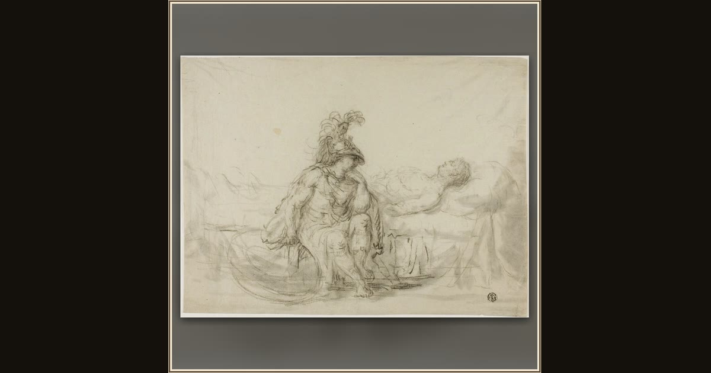

Achilles Mourning Patroclum
Unknown Artist · n.d. · Art Institute of Chicago
Achilles grieves beside Patroclus’s body (19.3–5). Explore its place in Homer's Iliad, Book XIX, line 4.

Unknown Artist · n.d. · Art Institute of Chicago
Achilles grieves beside Patroclus’s body (19.3–5). Explore its place in Homer's Iliad, Book XIX, line 4.